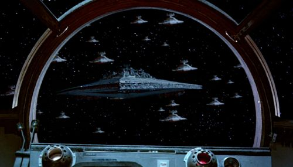

L’Exécuteur est le gigantesque Destroyer Stellaire de classe Super de Dark Vador, une arme de terreur qui domine les batailles spatiales de la galaxie. Long de 19 kilomètres, ce vaisseau impérial est doté d’une puissance de feu colossale, capable d’anéantir des flottes entières. Son imposante silhouette plane sur le champ de bataille, incarnant la domination écrasante de l’Empire.
|  |